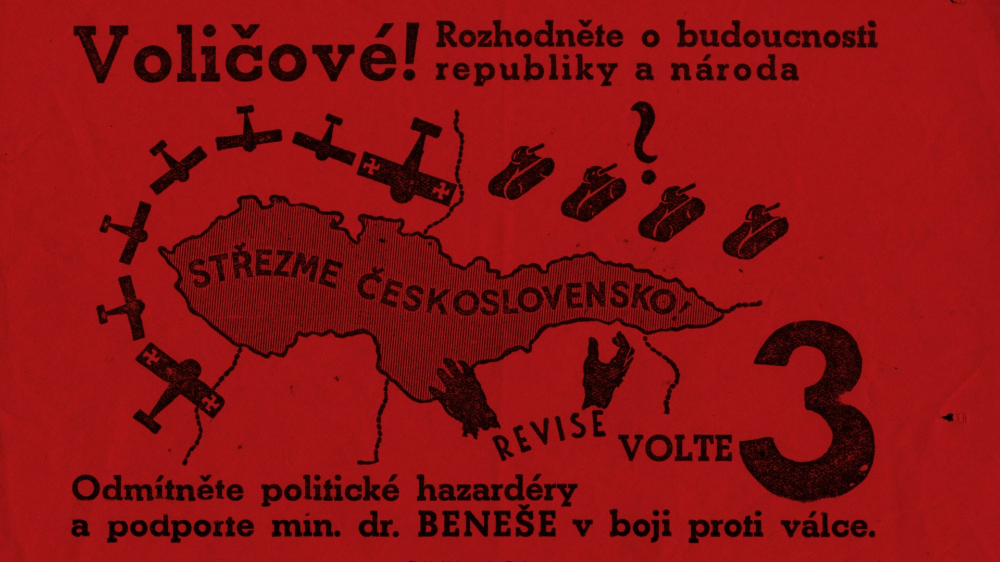
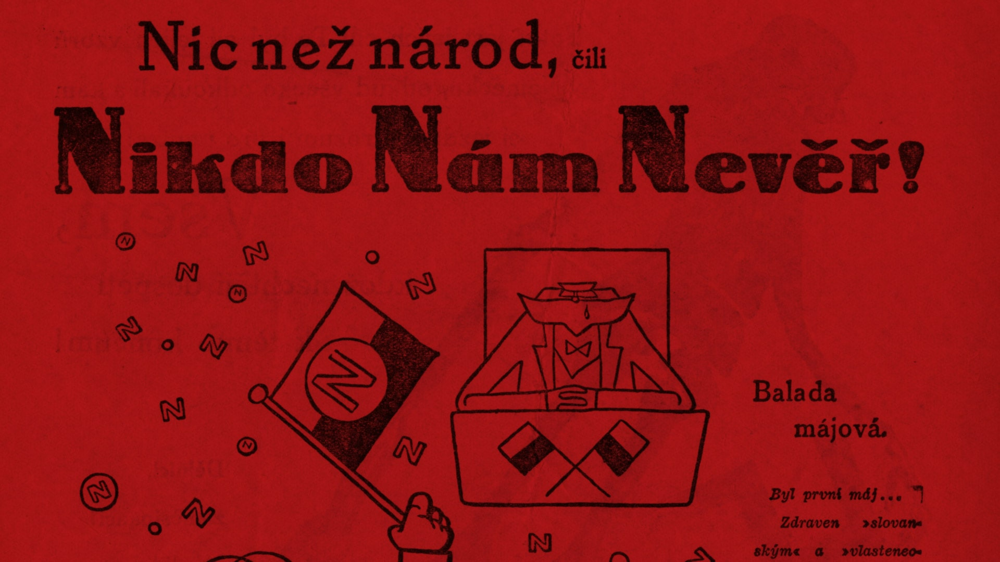
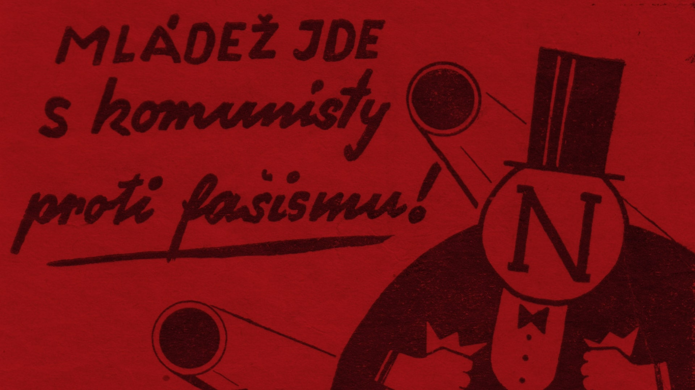
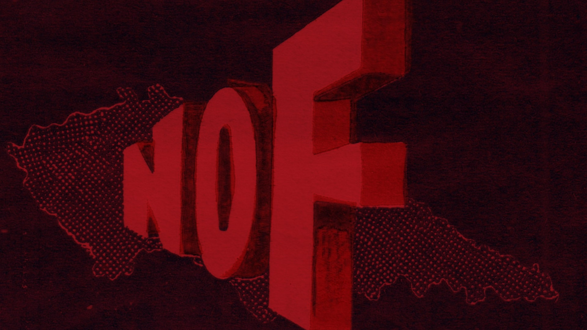
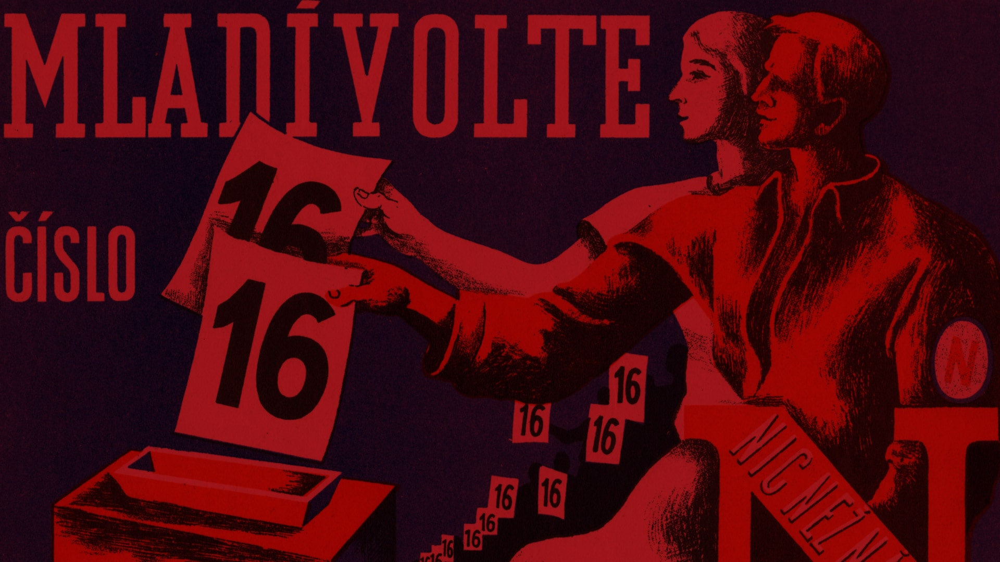
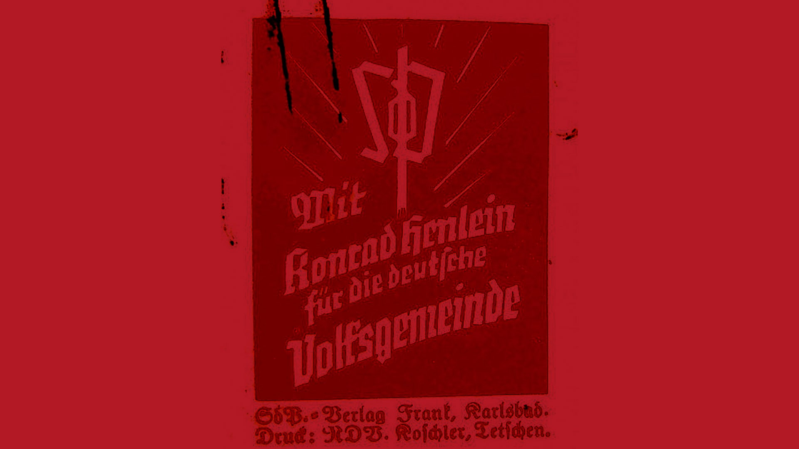
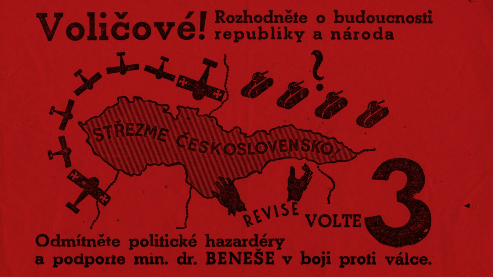
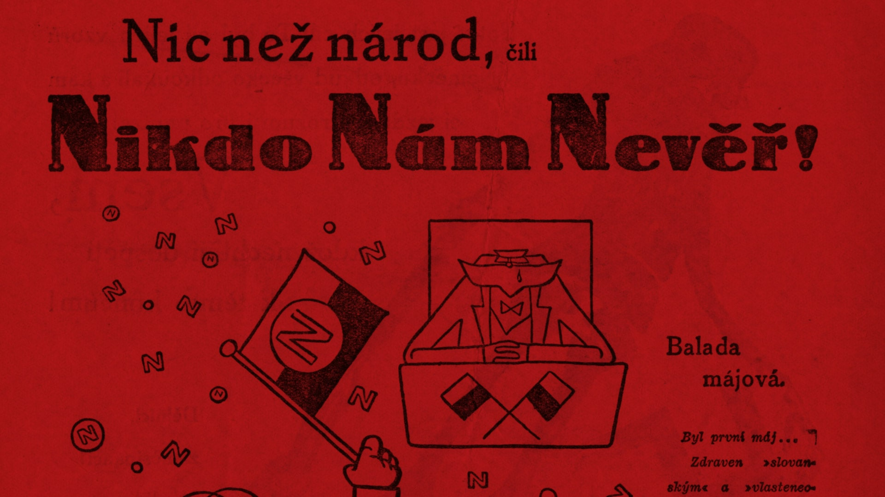
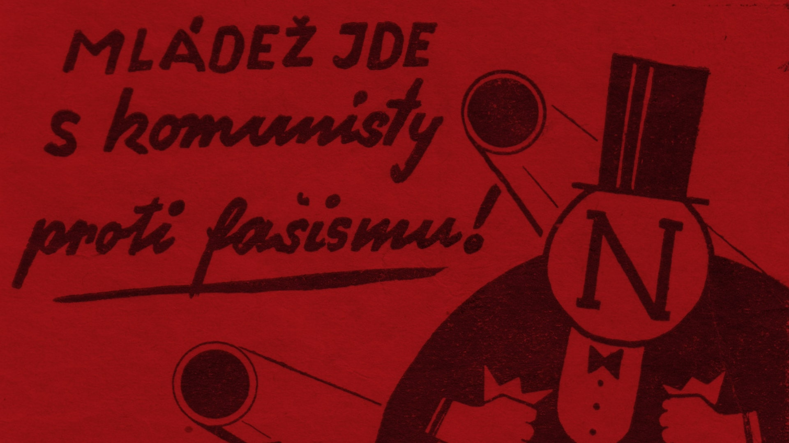
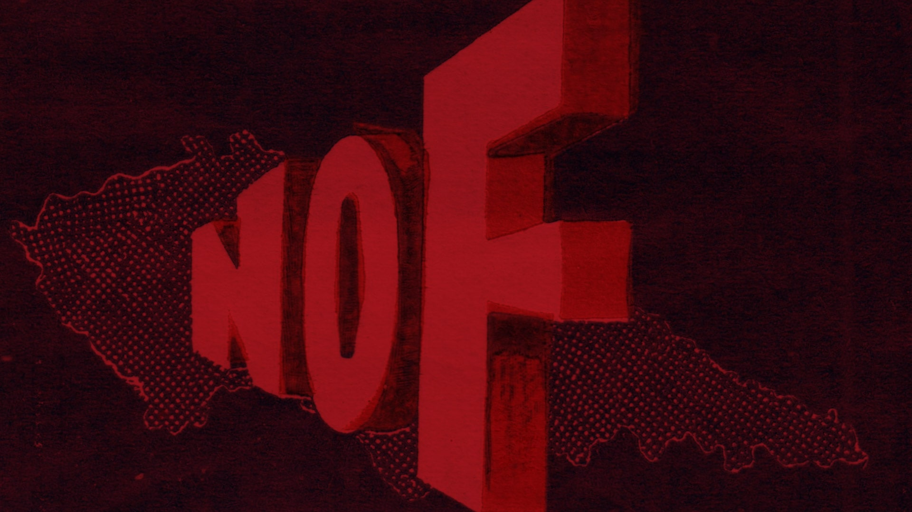
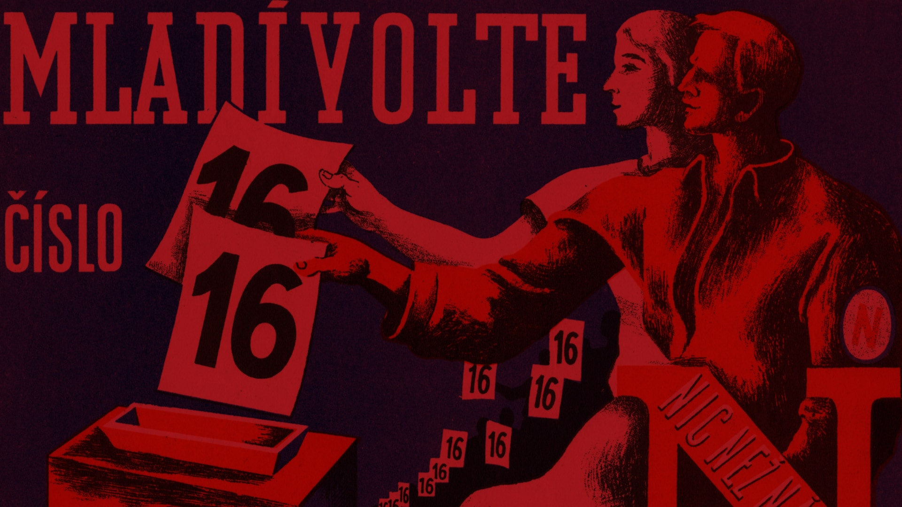
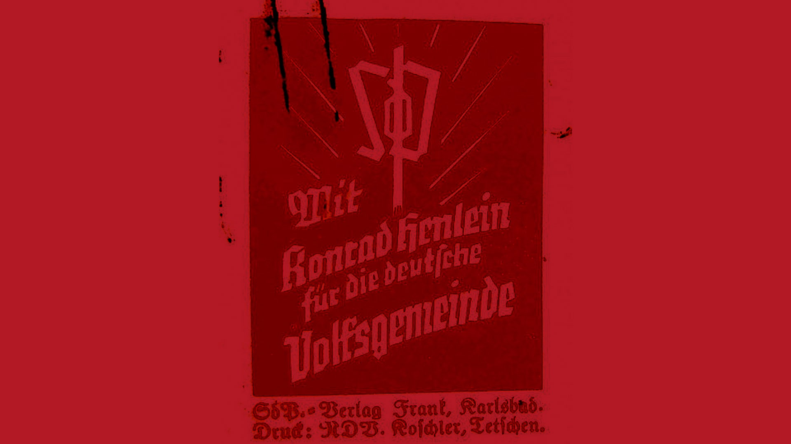
Ano
Ne
Choice 3
Choice 4
Choice 5
Voleb se zúčastnilo 92,8 % voličů.
Navzdory předvolebním výzkumům se absolutním vítězem stala SDP Konrada Heinleina. Strana získala 1,25 milionu hlasů, z celkového počtu tedy 15,2 %.
Na druhém místě skončili Agrárníci, kteří získali vlivem rozdílné váhy voličských hlasů o jeden mandát víc, ačkoli je volilo podstatně méně lidí. Většina voličů pocházela
z východní části Československa.
Třetí byla ČSSD, pro kterou byl výsledek zklamáním. Nespokojená s výsledkem byla
i Československá obec fašistická s pouhými šesti mandáty.
Dosavadní koalice podala v důsledku voleb demisi, protože už neměla zajištěnou většinu. Vzniklo nové uskupení sedmi stran a dvou nestraníků, tzv. široká koalice, která se obešla bez vítězné SDP. V čele nově zformované vlády usedl jako premiér agrárník Jan Malypetr.
Klid na politické scéně se však nekonal. Do roku 1938 se u nás vystřídalo celkem pět vlád, poslední z nich byla tzv. vláda úřednická. Ve stejném roce bylo pohraničí Československa na základě mnichovské dohody postoupeno Německu.
Československá republika na několik let zanikla.